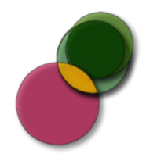
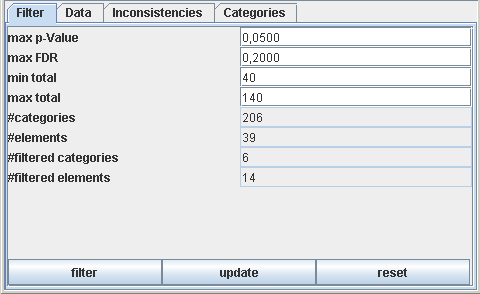
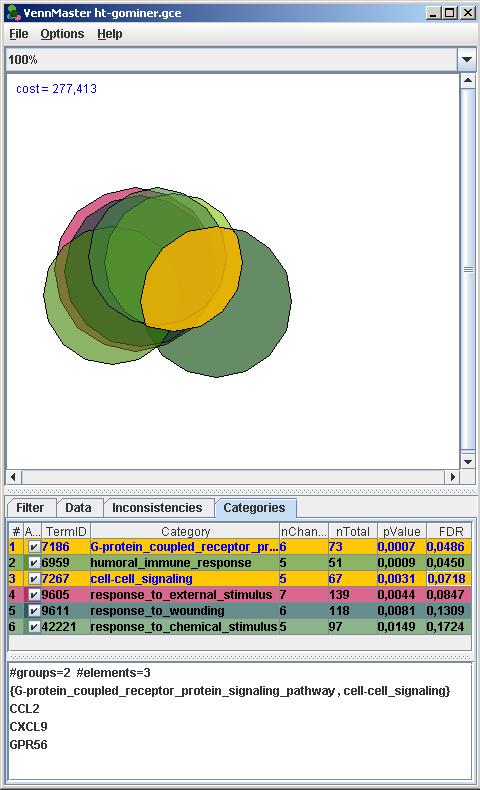
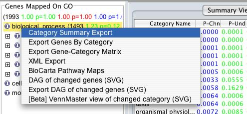
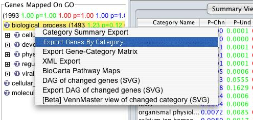
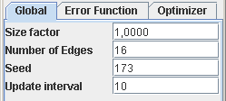
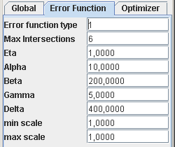
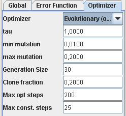
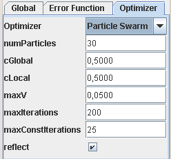

VennMaster Software Documentation
A tool for drawing area proportional Euler diagrams.
|
 |
0. Introduction
VennMaster is a tool for drawing area proportional
Venn/Euler-diagrams by importing gene lists from
GoMiner.
1. Installation
The software requires the Java runtime environment 1.5.0 (JRE 5.0) which can be downloaded from java.sun.com.
- Install JRE 5.0 (1.5.0) if it is not available on your system.
- Download the current VennMaster version and unpack the file into a directory. MacOS X users can alternatively use the .dmg disk image.
- Start VennMaster by
- Windows: Double click on venn.bat in the installation
directory.
- Unix/Linux/MacOS X: Call venn.sh from the command line
(ensure that your java executable is in the search path)
in the installation directory.
- MacOS X with disk image: Open the disk image with a double click
and drag the VennMaster-xxx.app icon to your applications folder.
Hint: It is not recommended to call
VennMaster by a direct
click on the venn.jar file since the standard memory assignment
is too low for the most Euler arrangements.
VennMaster is packed into a single zip archive which must be unzipped (e.g. using WinZip) into
the desired directory (e.g. "C:\Program Files\" or your home directory).
Call venn.sh in the VennMaster directory from the command line
(Linux or Mac OS X) or double click venn.bat under
Microsoft Windows in the file explorer.
When using many categories VennMaster may report an out of memory error.
In these cases reduce the number of categories by specifying other import filter settings or
open venn.sh (Linux or Mac OS X) or venn.bat (Windows) with a text editor
(e.g. vi or notepad) and change the memory size by editing the two -X options of the java call.
The -X options specify the memory size (in MB) assigned
to the software. These can be adapted depending on the available memory and the problem size
(number of categories/elements). The standard settings are usually too small for the most problems
(2MB for Sun Java 1.5 on linux and 1MB on win).
VennMaster-0.33.6.zip (Version 0.33.6)
VennMaster-0.33.6.dmg (MacOSX disk image)
2. License
VennMaster and the VennMaster source code are licensed under a

Creative Commons Attribution-NonCommercial-ShareAlike 2.5 License.
Running VennMaster
The following steps lead to an Euler diagram:
- Import a data set
- Filter the data (only for data formats B and C)
- Explore the Euler diagram
VennMaster can import three different file formats.
This is a very simple tab delimited file format with an element/group pair in each
line which can easily be generated by e.g. Microsoft Excel or OpenOffice.
Toy example:
cat mammal
dog mammal
rose plant
rose spiny
dog animal
lobster animal
lobster spiny
:
:
This example can be downloaded: example1.list.
VennMaster can import the pair of GoMiner summary export and
gene-category export files.
A brief summary of using GoMiner to generate these files is given in the
Appendix below.
An example file pair can be downloaded:
go1.se
go1.gce.
VennMaster can import the single .gce-file which can be exported by
the new high-throughput GoMiner.
A. List File
Choose the menu point Open List in the File menu and
navigate to a file in the format described in section 1a.
B. GoMiner Export File
- Choose Open GoMiner file from the VennMaster File menu.
- In the first appearing file open dialog select the summary
export (.se) file and press OK.
- In the subsequent file open dialog select the gene-category
export (.gce) file.
- Continue with filtering.
C. High-Throughput GoMiner Export File
The export file format of the high-throughput GoMiner is now a single .gce file
with a new column containing the false discovery rate (FDR).
For file format B and C (GoMiner) the number of categories have to be
reduced with the interactive filtering panel.

The four parameters have to be adjusted until the number filtered categories
(field #filtered categories) is satisfying.
The number of filtered categories and elements are immediately adjusted
when changing the filter values.
More than 10 categories
are not recommended since the simulation time and memory consumtion
gets very high and the generated diagram is not easy to read.
Click on the Update button to start the simulation with the current
filter settings. The Reset button sets the filter settings back to the
currently shown diagram. Normally the filter dialog should react immediately
when changing the filter parameters. If not press on the Filter
button.

VennMaster allows the interactive exploration of the sets.
When moving the mouse slowly over the polygon arrangement, the region under the mouse will
be highlighted and the corresponding sets are shown in a small tool tip window.
When a region is selected with the left mouse button the details of the selection are
listed in the "Categories" tab of the information pane on the bottom.
The upper panel shows the categories (for GoMiner files additional information is shown
such as the TermID, nChanged, nTotal, pValue, and FDR).
A double-click on a GO TermID opens a web browser with a direct link to
www.geneontology.org.
The lower pane shows a global information of the currently selected (intersection) set
such as the number of involved groups and the number of elements in the intersection.
Then all elements in the (intersection) set are listed in the lines below.
With a double-click on a gene name a web browser is opened with a link to
www.genecards.org.
If a single polygon is selected it can be moved by drag and drop. Subsequently, the optimization
process can be started (Options/Optimize) on the modified arrangement.
When pressing the control button while selecting polygons, multiple regions can be selected and
their corresponding elements are shown in the "Selection" region.
Set intersections for which no corresponding geometric intersection exists are listed in
the "Inconsistencies" field of the information panel.
Each entry consists of a list of categories { C1, C2 ..., Cn } : u with an integer
u > 0 describing the number of elements in the shown intersection set.
VennMaster enables to copy and paste the contents of the
category table and the gene list with the following
key commands:
- Select one or more cells of the category table or gene list with
the mouse.
- Press ctrl+A to select the whole table.
- Press ctrl+C to copy the data into the clipboard.
- Go to the target application (e.g. Excel or a word processing program) and paste the data.
Appendix
1. Generating GoMiner summary export (.se) and gene-category export files (.gce)
After processing the data with
GoMiner (http://discover.nci.nih.gov/gominer) the
summary export (.se) and category-genes export files (.gce) have to be exported via
the middle panel of the GoMiner graphical user interface (GUI).
The desired root category node needs to be selected by a single left click, and the
context menu activated by a single right click.
The two menu items
- Export summary data to text file - creates the summary export (.se) file

- Export genes by category - creates the gene-category export (.gce) file

should be selected this way to save the .se and .gce files to disk.
2. The Parameter Dialog
Optimization and visualization parameters can be configured via the parameter dialog
(menu Options/Options).
A. Visualization/Global Options

size factor
(default 1.0) |
Can be adapted to grow/shrink the polygons to fit better in the bounding box
which may occur if the intersections between sets is very small (so the diagram
is too wide for the bounding box - reduce e.g. to 0.7 in those cases). |
number of edges
(default 16) |
How many edges should the polygons have (>=3) |
Seed
(default 173) |
The random seed value ensures reproducible results (for
one software version). Other solutions are found if this
value is changed. For negative values the current system time
is used as random seed. |
Update interval
(default 10) |
The number of optimization steps after which the currently best
solution is shown while the optimization is running. |
B. Error Function

error function type
(default 1) |
0=old error function, 1=new error function |
max intersections
(default 6) |
The maximum number of sets which will observed when evaluating the error function |
alpha
(default 10.0) |
Error function weight for unwanted intersection |
beta
(default 20.0) |
Error function weight for missing intersections |
gamma
(default 5.0) |
|
delta
(default 400.0) |
Pressure term for more compact solutions |
min scale
(default 1.0) |
Allow changes of the polygon radii (experimental). |
max scale
(default 1.0) |
Allow changes of the polygon radii (experimental). |
C. Optimization Options
Different optimizers can be chosen in the Optimizer panel
(The Evolutionary new is experimental).
i) Evolutionary Optimization

The mutation parameters (like min mutation and max mutation)
behave relative to the bounding box where the individuals "live". So a mutation rate of 0.2
can move an polygon 1/5-th of the total bounding box.
tau
(default 1.0) |
Mutation basis parameter (mutation of the mutation parameter) |
min mutation
(default 0.01) |
Lower bound for the mutation rate |
max mutation
(default 0.2) |
Upper bound for the mutation rate |
generation size
(default 30) |
How many individuals are in the generation (25-100 individuals are reasonable). |
clone fraction
(default 0.2) |
The best individual has N=clone fraction * generation size
outcomes. The individual with rank r has at most min(1,N/r) outcomes. |
max opt steps
(default 200) |
Maximum number of optimization steps. Increase this value for better
solutions. |
max const steps
(default 25) |
Stopping condition for the evolutionary algorithm.
If there is no cost improvement in the best individual within
max const steps epochs the optimization will be stopped.
Increase this value for better solutions. |
ii) Particle Swarm Optimization

numParticles
(default 30) |
How many particles are in the swarm (25-100 individuals are reasonable).
Each particle represents a solution to the problem. |
cGlobal
(default 0.5) |
The velocity of each individual is influenced by the global
optimum (that is: the best individual to its best iteration up to now). |
cLocal
(default 0.5) |
The velocity of each individual is influenced by the local
optimum (that is: the optimum of the respective individual up to now). |
maxIterations
(default 200) |
Maximum number of optimization steps. Increase this value for better
solutions. |
maxConstIterations
(default 25) |
Stopping condition for the evolutionary algorithm.
If there is no cost improvement in the globally best particle within
maxConstIterations epochs the optimization will be stopped.
Increase this value for better solutions. |
reflect
(default true) |
If reflect is checked the particles are reflected at the bounding box
(the domain of the optimization problem) resulting in an inverted
velocity vector in the corresponding coordinates. |
3. Command line options
The functionality of VennMaster can be automated from the command line to enable batch processing
of multiple files.
Type the following call in your VennMaster installation directory:
java -Xms256m -Xmx256m -jar venn.jar arguments ...
The two -X options are necessary to adapt the memory assignment
to VennMaster. For larger problems it may be necessary to increase those values (e.g. to 512).
- -help,-?
- displays help information
- --version, -v
- displays the version number of VennMaster
- --cfg file.xml
- configuration file
- --ocfg file.xml
- configuration file output
- --list file.list
- list file input
- --gce input.gce
- GoMiner gene-category export file
- --se input.se
- GoMiner summary export file
- --htgce ht-input.gce
- High-Throughput GoMiner gce file
- --filter file.xml
- filter file (for GoMiner)
- --ofilter file.xml
- filter file output
- --svg file.svg
- SVG file output
- --sim file.txt
- simulation errors output
- --prof file.txt
- error profile output for the last simulation
The original version of this page is available at
http://www.informatik.uni-ulm.de/ni/staff/HKestler/vennm/doc.html.
André Müller & Hans A. Kestler
Last modified: 2006-05-26